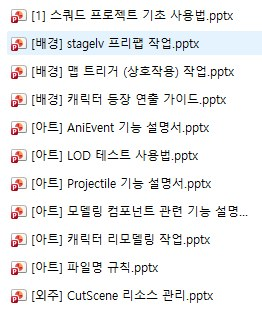
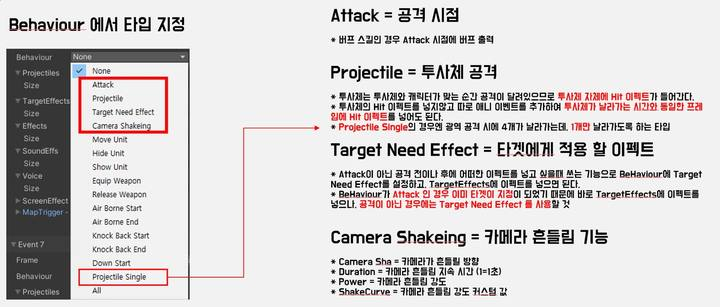

10개 이상의 시스템을 하나의 데이터 규칙 위에 연결
전투 효과의 코어를 재사용하고, 각 성장 · 콘텐츠는 보상 · 초기화 · 경쟁 규칙만 추가하도록 설계했습니다. 시스템이 늘어날 때 코어 코드를 다시 만들지 않는 것이 목표였습니다.
전투 모듈 테이블
모듈화된 하나의 테이블과 발동 규칙
버프 · 디버프
41종 턴제 상태이상
인연
수집 보너스와 합격기
고유 무기
스킬과 외형을 바꾸는 전용 장비
속성 연구
선행 조건이 있는 영구 성장
로그라이트
보급품 · 불이익 선택지 덱빌딩
타워
랭킹과 어뷰징 방어
턴 제한 피해 측정 콘텐츠
딜량 측정 던전
도전 모드
난이도를 조립하는 보스전
스테이지 미션
조건 · 비교 연산 과제
전투 효과 데이터의 조합 규칙
유닛 스킬, 장비, 보스 패턴, 콘텐츠 특수 효과를 같은 조합 규칙으로 정의했습니다. 네 개의 축을 조합하면 하나의 효과가 완성됩니다.
시점 · 언제?
공격 · 피격 · 턴 시작 · 사망 시
대상 · 누구에게?
자신 · 아군 전체 · HP 최저 적
조건 · 어떤 상황?
치명타 · 특정 디버프 · HP 기준
기능 · 무엇을?
대미지 · 버프 · 협공 · 턴 게이지
예시. “내 턴 시작 시, HP가 가장 낮은 아군에게, 출혈 상태일 때, 최대 HP의 15%를 회복한다”를 데이터 한 줄로 완성합니다.
한 번 만들고, 모든 전투 · 성장 · 콘텐츠가 재사용
입력과 출력 항목을 유지하고, 시스템마다 필요한 조합을 데이터로 작성했습니다.
확장 비용 절감
새 콘텐츠가 코어 코드를 다시 만들지 않고 기존 효과 조합을 선택합니다.
밸런스 기준 통일
같은 효과가 유닛 · 장비 · 콘텐츠마다 다른 규칙으로 계산되는 분기를 줄입니다.
검증 지점 단일화
시점 · 대상 · 조건 · 기능의 유효성 검사를 공통 파이프라인에서 수행합니다.
코어가 제공하는 것
- 버프 · 디버프 부여
- 소환 · 협공 · 오라
- 대미지 · 회복 · 관통
- 턴 게이지 제어
- 조건부 추가 효과
코어를 사용하는 것
- 유닛 · 보스 스킬
- 고유 무기
- 도전 모드 · 스테이지 미션
- 로그라이트
- 타워
41종 상태이상 · 버프 17 / 디버프 24
상태의 개수보다 중요한 것은 중첩, 갱신, 시전자 소멸을 같은 수명주기로 다루는 규칙입니다.
버프 17
능력치 강화, 보호, 행동 보조, 자원 회복처럼 아군의 전투 선택을 넓히는 효과를 공통 분류로 관리합니다.
디버프 24
지속 피해, 행동 제한, 능력치 약화, 표식처럼 상대의 위험과 대응 순서를 바꾸는 효과를 같은 계약으로 관리합니다.
| 항목 | 정의 내용 |
|---|---|
| 중첩 | 스택 상한과 스택별 강도 변화를 상태 정의에 둡니다. |
| 갱신 | 재부여 시 지속 턴을 덮는지 더하는지 명시합니다. |
| 시전자 종속 | 시전자 이탈 · 사망 때 효과가 유지되는지 정합니다. |
| 표시와 해제 | 아이콘, 설명, 해제 가능 여부를 데이터와 연결합니다. |
예외를 상태마다 코드로 흩뜨리지 않고, 상태의 수명과 표시 · 해제 계약을 데이터에서 읽도록 설계했습니다.
캐릭터 300+ · 보스 20+ 전투 설계
스킬 데이터 구조, 행동 패턴, 능력치, 밸런스와 난이도를 같은 전투 규칙으로 조율했습니다.
스킬 구조
- 발동 · 대상 · 조건 · 기능 조합
- 상태이상과 전투 자원 연결
- 장비 · 성장 효과 재사용
행동 패턴
- 턴 순서와 행동 우선순위
- 체력 구간별 패턴 전환
- 소환 · 보호 · 집중 공격 역할
밸런스 · 난이도
- 능력치와 효과 기댓값 조율
- 파티 조합별 대응 가능성
- 보스 기믹의 학습 · 실행 단계
다량의 개별 데이터를 만들되 규칙을 복제하지 않습니다. 캐릭터와 보스의 차이는 조합과 패턴에서 만들고, 계산 계약은 공통으로 유지했습니다.
모으고, 키우고, 강해지는 세 성장 시스템
수집 동기와 장기 성장을 만들되 공통 스탯 옵션과 전투 효과 체계를 재사용했습니다. 세 시스템은 서로 다른 플레이 목표를 만듭니다.
유닛을 다 모으면 열리는 보상
지정 유닛 세트를 모으면 스토리와 인연 보너스를 열고, 함께 편성했을 때 고유 합동 스킬이 활성화됩니다.
장착하면 스킬이 바뀐다
레어~전설 전용 무기가 지정 스킬의 대미지 기반과 전투 효과를 교체하고 외형 모델까지 변화시킵니다.
속성별 영구 성장 트리
4속성 × 8능력치를 강화합니다. 한 옵션을 더 올리려면 같은 속성의 모든 옵션이 기준 레벨을 넘어야 합니다.
- 공통 옵션 문법
- 능력치와 전투 효과를 같은 데이터 구조에서 읽습니다.
- 획득 동기 분리
- 수집, 전용 장비, 장기 연구가 서로 다른 플레이 목표를 만듭니다.
- 선행 조건 명시
- 성장 상한과 다음 단계의 요구 조건을 데이터로 검증합니다.
전투 코어 위에 경쟁 · 측정 · 도전 규칙을 얹는다
초기화, 랭킹, 보상 상한과 미션 판정을 콘텐츠별 메타 레이어로 분리했습니다.
06 · 로그라이트 — 매 판 새로 짜는 덱빌딩
만렙 가상 유닛으로 시작해 보급품과 불이익 선택지를 조합하고, 진행도는 주간 초기화합니다.
- 30
- 최대 전투 스테이지
- 3
- 매 전투 스테이지 선택지
- 6
- 최대 불이익 선택지
- 5
- 보급품 희귀도
보급품 & 불이익 선택지
아이템 보유 수로 전투 효과를 활성화합니다. 불이익 선택지는 난이도를 올리는 대신 보상 확률을 높여 리스크와 보상을 직접 조절하게 합니다.
전투 스테이지 테마 랜덤
일반 · 정예 · 보스 전투 스테이지의 확률을 배치하고, 같은 선택지 안에서 중복 전투 스테이지가 나오지 않도록 제한합니다.
파편 보너스
런 중 획득한 파편과 보급품 구성이 다음 전투 효과 조합을 바꾸도록 같은 전투 효과 데이터 규칙을 사용합니다.
| 콘텐츠 | 한 줄 정의 | 추가한 메타 규칙 |
|---|---|---|
| 07 · 타워 | 랭킹이 걸린 등반 던전 | 월간 초기화 · 상위 50인 랭킹. 최대 층, 턴, 선착의 3중 정렬과 서버 검증으로 0턴 · 빈 덱 · 건너뛰기 어뷰징을 막습니다. |
| 08 · 턴 제한 피해 측정 콘텐츠 | 딜량이 곧 랭크 | 체력이 없는 측정용 보스에게 준 피해량으로 랭크를 결정하고, 매일 공통 랜덤 스테이지와 기록 상한 · 배수 보상을 연결합니다. |
| 09 · 도전 모드 | 난이도를 직접 조립 | 선택한 미션 수만큼 적에게 전투 효과를 추가하거나 보스 스킬을 교체하고, 선택 개수에 비례해 보상을 높입니다. |
| 10 · 스테이지 미션 | 조건 + 비교 연산 | ‘조건 · 비교 연산자 · 목표 값’ 세 필드로 다양한 도전 과제를 표현하는 범용 미션 구조를 설계했습니다. |
즉시성은 클라이언트, 가치와 경쟁은 서버
기능 목록이 아니라 실패했을 때 누구의 값이 정본인지부터 정하고 기획서를 작성했습니다.
Client · 즉시성 · 연출 · 판정
- 전투 연출과 이펙트 출력
- 보급품 · 선택지 랜덤 리스트 생성
- 도전 목표와 별 개수 판정
- 로그라이트 가상 유닛 처리
- UI 진행 상태 제어
Server · 가치 · 경쟁 · 검증
- 보상 · 재화 지급과 도감 등록
- 랭킹 산정과 랭킹 보상
- 진행도 저장과 주기 초기화
- 0턴 · 빈 덱 · 건너뛰기 검증
- 클라이언트 결괏값 정합성 재확인
경계 케이스. 초기화 직전 전투에 진입했다면 이후 클리어해도 진입 시점 기준으로 정상 지급합니다. 유저 손실과 어뷰징 여지를 동시에 줄입니다.
개발이 끝나면 테스트 · 가이드 · 툴로 반복 가능하게 만든다
검증 도구와 가이드 문서 13종 이상을 제작해 데이터, 아트, 외주 핸드오프의 기준을 남겼습니다.



- 데이터 무결성
- 참조 · 누락 자동 검사
- Unity 자동화
- 반복 작업과 설정 검증
- FBX · Magica
- 리소스 교체와 설정 동기화
- 외주 핸드오프
- 규격 · 검수 · 책임 경계 문서화
기획 규칙과 콘텐츠 데이터를 설계합니다.
캐릭터와 콘텐츠를 대량으로 만들다 보면 규칙이 흐트러지기 쉽습니다. 규칙을 하나로 지키고, 데이터를 검증하고, 파트 간 책임을 분명히 남기는 것이 시스템 / 전투 메인 기획의 역할이라고 생각합니다.